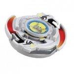

Driger S
| Driger S (Slash) | |
|  | |
| Number: | #35 |
|---|---|
| System: | 5-Layer |
| Type: | Survival |
Contents
Attack Ring (AR): Tiger Defenser
- Weight: 5 grams
Tiger Defenser is one of the most popular AR selections in Beyblade. It has great survival ability due to its round shape; there are very few points of contact on Tiger Defenser that can cause heavy recoil. It has great defense ability due to its small size, leading to higher spin velocity and therefore, higher defense. It also has some attack ability due to its rounded spikes and small Upper Attack slopes.
Use in Survival/Zombie Customization
Using Tiger Defenser, you can create a strong survival combo. This AR does not take many heavy hits in battle. Here is an example:
- AR: Tiger Defenser (Driger S)
- WD: Wide Survivor
- SG: Left SG (Bearing Version) (Wolborg)
- SG Shaft: Bearing Base (Metal Dragoon Bearing Stinger)
- BB: Defense Grip Base 2 (Wolborg 2)
The small projections on Tiger Defenser can steal spin from the opponent. The round shape will not take recoil, so the Beyblade will have higher defense. However, if you want a Left-Spin survival combo with better defense ability, Galeon's War Lion is a better choice in .
Use in Compact Customization
Because of Tiger Defenser's small size and high spin velocity, it is one of the most popular AR choices for compact combos. Here is an example:
- AR: Tiger Defenser (Driger S)
- WD: Ten Heavy
- SG: Neo-Right SG Heavy Metal Core (Takara Metal Driger)
- BB: Metal Change Base (Driger S)
As you can see, this Beyblade is not very different from an uncustomized Driger S. However, with just a few simple improvements, Driger S's strongest attributes can be exploited even further.
Availability in Hasbro Jumping Base
While Takara released Jumping Base as a stand-alone product, Hasbro released Jumping Base as a full Beyblade and gave it a recoloured Tiger Defenser AR. If you can't find Driger S, you can get Jumping Base for Tiger Defenser.
Weight Disk (WD): Eight Heavy
See Eight Heavy.
Spin Gear (SG): Right SG
See Right SG.
Blade Base (BB): Metal Change Base
- Weight: 5 grams
The BB of Driger S, Metal Change Base, has an interesting function. The tip is sharpest at its direct center, but flat on most of the tip. Because of this, you can use this tip as either an attack tip or survival tip.
When shot straight, Metal Change Base will land on the sharpest part of its tip. In this form, this BB has great survival, better than many bearing shaft BBs, such as Wolborg. However, if shot on a slant, the BB will land on the flattest part of its tip, causing it to move in an attack pattern. In this mode, Metal Change Base's movement is very quick and aggressive, somewhat like SG Metal Flat Base (Gaia Dragoon V). Metal Change Base provides an excellent mix of the two types.
Changing Modes During Battle
When a Beyblade donning Metal Change Base is hit in battle while in survival mode, it will often tilt and shift into attack mode. This will allow the Beyblade to deliver a returning attack to the opposing Beyblade before regaining its balance and shifting back into survival mode.
Using Sliding Shoot With Metal Change Base
Sliding Shoot causes the Beyblade to tilt when it is shot. Because of this, Metal Change Base will create a movement that sweeps through the center of the Beystadium, shifting from attack to survival mode constantly.
Use in Compact Customization
Metal Change Base is round with a low diameter and a metal tip that has balanced performance. Because of this, it is the perfect choice for a compact combo. Note: This is the same compact combo that was listed for Tiger Defenser.
- AR: Tiger Defenser (Driger S)
- WD: Ten Heavy
- SG: Neo-Right SG Heavy Metal Core (Takara Metal Driger)
- BB: Metal Change Base (Driger S)
As you can see, this Beyblade is not very different from an uncustomized Driger S. However, with just a few simple improvements, Driger S's strongest attributes can be exploited even further.
Rule Clarification: Tip Exchange
It is illegal to exchange the tip of Metal Change Base with any other tip.
Other Versions
- Driger S - Phantom Force Version
- Driger S - BBA Championship Version
- Hasbro Jumping Base - (Tiger Defenser AR Only)
- Driger S - Hong Kong H-90 Limited Edition Crystal Version (Includes a color plated Eight Heavy)
- Driger S - Hong Kong H-99 Limited Edition Gold Version (Includes a Gold Plated Eight Heavy)
- Driger S - Random Booster 2 (original color)
- Driger S - Random Booster 2 (Silver-plated, Prize Beyblade)
- Driger S - Random Booster 4 (pink)
- Driger S - Random Booster 4 (Blue)
- Driger S - Random Booster 4 (Red)
- Driger S - Random Booster 4 (Dark Green)
- Driger S - Random Booster 5 (Red)
- Driger S - Random Booster 6 (Blue)
- Driger S - Random Booster 6 (Chestnut)
- Driger S - Random Booster 7 (Pale Purple)
- Driger S - Random Booster 7 (Black)
- Driger S - BeyBooster S (Silver/White)
- Driger S - Tournament Prize (Gold)
- Driger S - Tournament Prize (Silver)
- Driger S - Tournament Prize (White)
- Driger S - Tournament Prize (Clear Red)
- Driger S - (Clear Black)
- Driger S - (Clear Blue)
- Driger S - Fukubako 2002 (Clear)
Gallery
Driger S - Original Version
Driger S - Phantom Force Version
Overall
This Beyblade is a case of an older model being useful all over. Both Tiger Defenser and Metal Change Base are indispensable parts with many uses. The Phantom Force re-release was a godsend for people who missed this Beyblade the first time around. You can practice every shooting technique with this Beyblade, and many Beyblades can be defeated by Driger S with little or no customization. Every blader should own multiples of this blade.